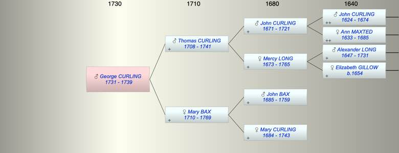

| [Index] |
| George CURLING (1731 - 1739) |
|  |
| b. 1731 at St Laurence |
| d. 1739 at St Laurence aged 8 |
| Parents: |
| Thomas CURLING (1708 - 1741) |
| Mary BAX (1710 - 1769) |
| Siblings (4): |
| Thomas CURLING (1734 - 1735) |
| Catherine CURLING (1736 - 1812) |
| John CURLING (1739 - ) |
| Thomas CURLING (1741 - ) |
| Events in George CURLING (1731 - 1739)'s life | |||||
| Date | Age | Event | Place | Notes | Src |
| 1731 | George CURLING was born | St Laurence | Note 1 | ||
| 1739 | 8 | George CURLING died | St Laurence | Note 2 | |
| Note 1: bap St Laurence 25 Oct 1731 ex FMP PR |
| Note 2: burial 16 Aug 1739 St Laurance son of Thomas and Mary ex FMP PR |
| Created on a Mac™ using iFamily for Mac™ on 8 Oct 2023 |